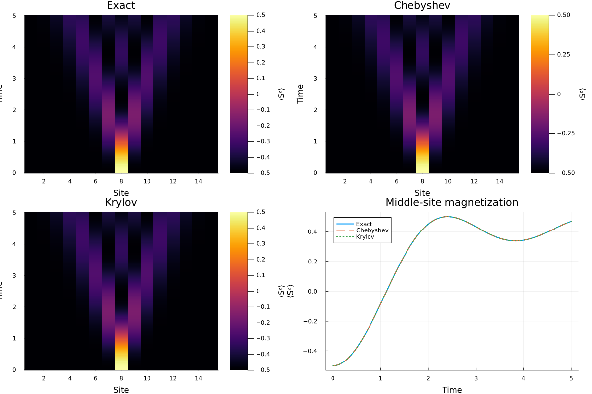

Time evolution
SpinDynamics.jl provides matrix-free real-time evolution using Krylov and Chebyshev methods.
The high-level interface is time_evolve.
Krylov evolution
Use the Krylov method with:
ψt = time_evolve(
model,
ψ0,
t;
method = :krylov,
)Additional method-specific keyword arguments can be supplied through the same interface.
For example:
ψt = time_evolve(
model,
ψ0,
0.1;
method = :krylov,
kry_m = 30,
)Chebyshev evolution
Chebyshev expansion is available with:
ψt = time_evolve(
model,
ψ0,
t;
method = :chebyshev,
)Energy bounds may be supplied explicitly:
ψt = time_evolve(
model,
ψ0,
t;
method = :chebyshev,
Ebounds = (Emin, Emax),
cheb_n = 30,
)If Ebounds is not supplied, the high-level interface estimates the spectral bounds automatically.
Example
A simple initial state can be constructed by flipping a single spin in the center of the chain:
using SpinDynamics
L = 15
model = XXZChain(
L;
Jxy = 1.0,
Jz = 0.5,
nup = L - 1,
)
middle = cld(L, 2)
ψ0 = ComplexF64.(
polarized_state_with_flips(model, [middle])
)
ψt = time_evolve(
model,
ψ0,
1.0;
method = :krylov,
)The Krylov and Chebyshev implementations operate without explicitly constructing the full Hamiltonian matrix.
Comparison with exact evolution
For a small system, the matrix-free methods can be compared directly with exact time evolution. The figure below shows the local magnetization dynamics for a single spin flip initially placed at the center of a 15-site XXZ chain.

The exact, Chebyshev, and Krylov results agree closely, illustrating the accuracy of the matrix-free time-evolution methods for this example.